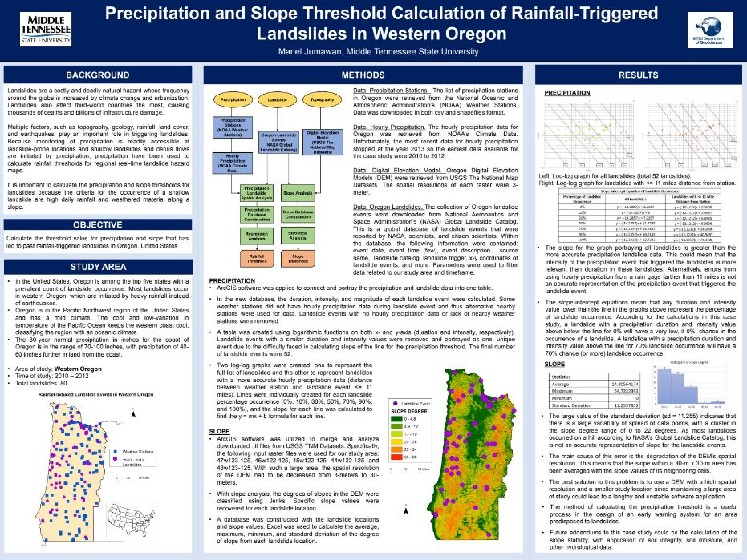
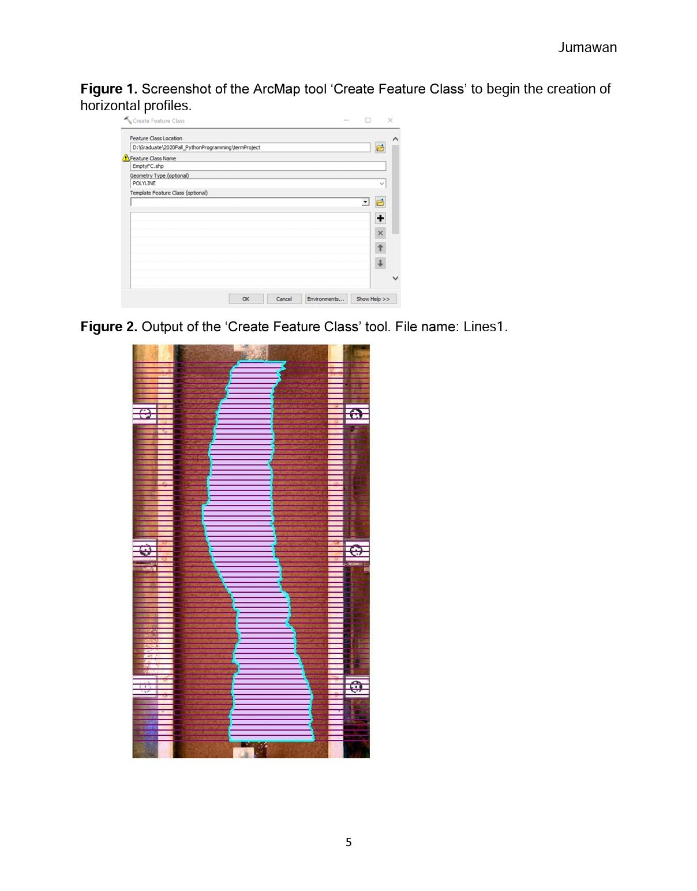
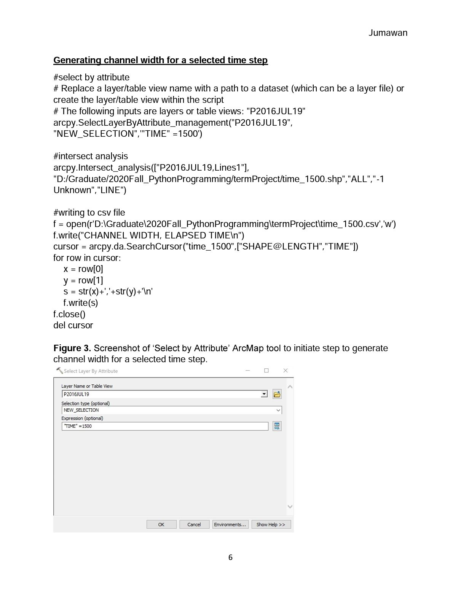
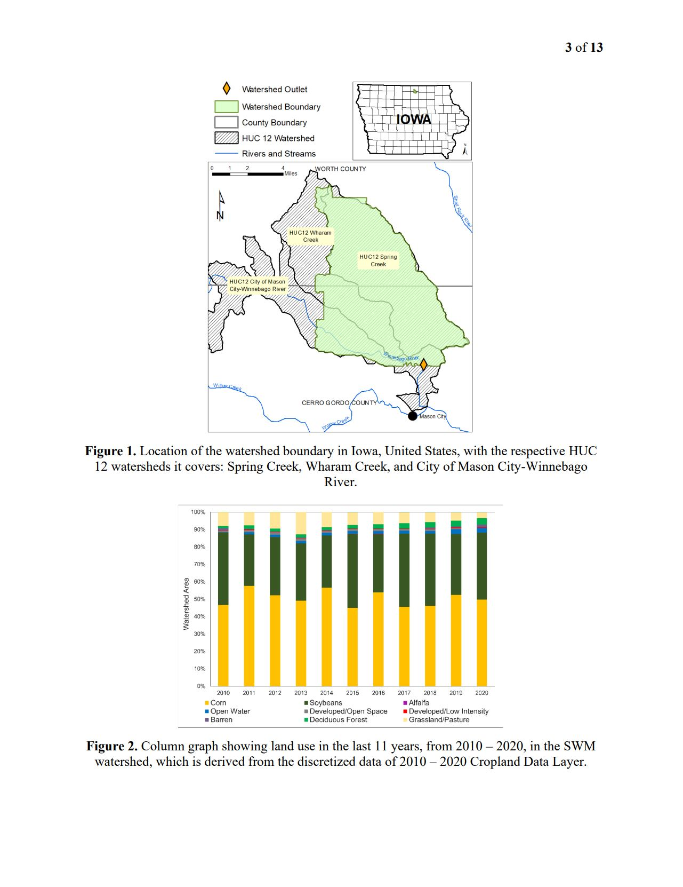
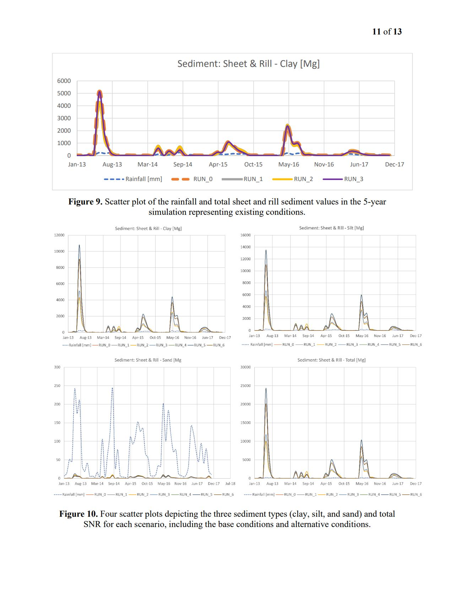
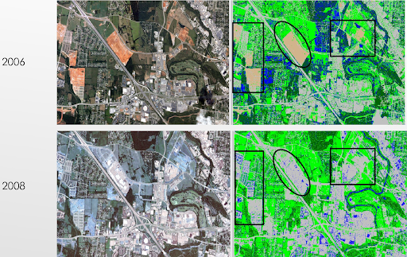
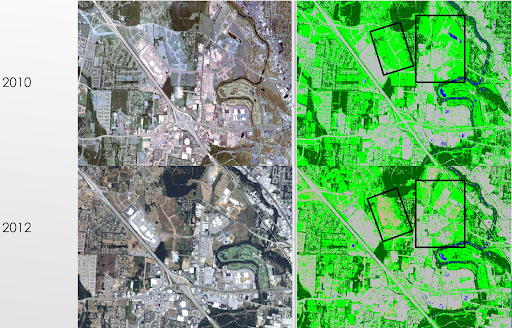
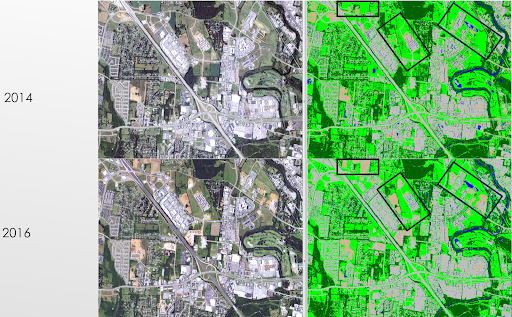

Mariel Jumawan ePortfolio
Personal Projects from my Graduate Program
Master of Science in Geosciences
Precipitation and Slope Threshold Calculation of Rainfall-Trigerred Landslides in Western Oregon
GIS Analysis with Application of Python Programming of Small-Scale Channel Widening Experiment
 Crop Conversion Impacts on Runoff and Sediment Loads in Small Watershed in Northern Iowa
 Examples of Maps and Diagrams Created During my Undergraduate Program
Bachelor of Science in Environmental Science
Assessment of Urban Growth in Areas in Rutherford County Using Supervised Classification with Erdas Imagine
  Hotspot Analysis using ArcGIS to Highlight Roads in Davidson County with High Percentage of Accidents